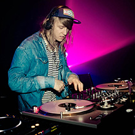

Welcome to my music corner of the internet :) Coming to college has opened up many more opportunities for me to experience live music. I'm always on the prowl for concerts and love connecting with others through music. This section previews concerts I've been to so far.
2012
2013
2014
All
Giraffage
Awesome set. He killed it! 2nd time seeing him :)
Heart Break Halloween
Favorite acts were Kehlani and Jay Ant.
Gambino + Eryka Badu
Erykah Badu gave me all the feels. Gambino's energy was wild. Great performer.
Lunice (Thanks Superb!)
His set was nasty, in the best way. Murdered it.
HeiroDay 2014
Heiroglyphics were great. Goapele was lovely.
Under the Influence
It was okay performance wise. Mostly slapperz.
Sound of Tomorrow
GoldLink killed it, so did Dpat. Love soulection as a label.
BFD 2014
Saw M.I.A, Phantogram, Fitz and the Tantrums, Foster the People. Overall great shows!
Because the Internet
Good energy from Gambino.

Cashmere Cat (Thanks Superb!)
Perfect outdoor show mix with a little sprinkling on Sproul.
Coachella
Best music experience ever. Knocked out many artists. Favorites: Flume, Outkast, Nas
Schoolboy Q
Gangsta. Gangsta. Ganstaaaa!
Flosstradamus
The turn up was so real here. Killed it.
Lionel Richie
Old school vibes. A legend. Sounds just as good live.
Macklemore
Awesome energy from the crowd. A lot of feels.
Dreams Come True Tour
Cozy venue with great fans. Lost my voice rapping along.
Yeezus Tour
Went mostly for Kanye's older songs. Songs off Yeezus were cool.
ZionI (Thanks Superb!)
Yay Areaaaaa. Whole concert slapped.
Hardwell
First EDM concert and it was great.
Spring Fest 2013
All the artists performed well. Favs: Jhene Aiko and Casey Veggies.
Spring Fest 2012
Lupe Fiasco absolutely slayed the show. Miguel sang a verse to me (was front row :D)